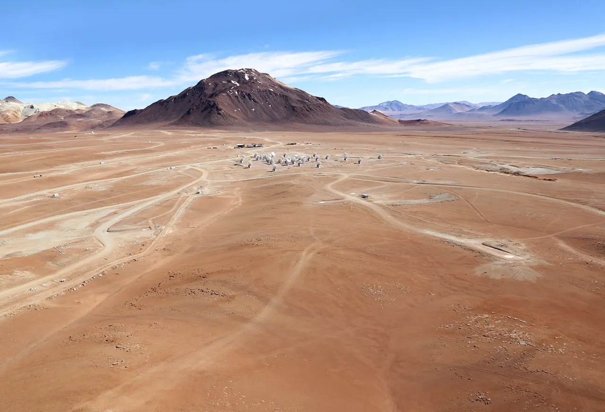

L'ESO (Observatoire Européen Austral) a établi une collaboration avec l'initiative Des Ailes pour la Science, qui fournit une assistance aérienne à des entités de recherche scientifique lors d'une expédition mondiale.

L'expédition a récemment capturé des images remarquables des observatoires du nord du Chili, dont ALMA (Atacama Large Millimeter/submillimeter Array), le plus grand projet d'astronomie en existence.
L'ESO prévoit de partager les photographies aériennes de ses observatoires chiliens sur ses plateformes web.